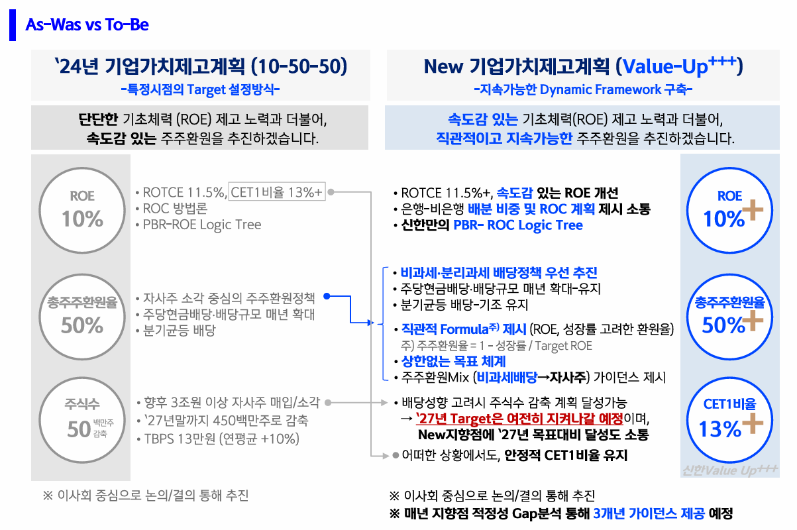

신한금융그룹(회장 진옥동)은 23일 새로운 기업가치 제고 계획인 ‘신한 Value-Up 2.0’을 발표하며 주주가치 극대화를 향한 강력한 의지를 드러냈다. 이번 계획은 기존의 절대 목표 중심에서 벗어나 ROE 개선과 주주환원 정책을 유기적으로 연결한 것이 특징이다.
신한금융은 ROE 제고 속도에 연동하는 주주환원율 산식을 전격 도입했다. 구체적인 산식은 '1 - (성장률 / 목표 ROE)'로, 예를 들어 성장률 4~5%, ROE 10% 달성 시 주주환원율은 50~60% 수준이 된다. 이를 통해 주주들에게 명확하고 예측 가능한 환원 지표를 제공하겠다는 방침이다.
특히 2026년 결산부터 3년간 비과세 배당을 실시하며, 주당배당금(DPS)을 매년 10% 이상 확대하는 공격적인 정책도 포함됐다. 자사주 매입 및 소각 또한 PBR 개선 수준에 따라 탄력적으로 병행할 예정이다.

🔍 좌측(기존)과 우측(개편)의 주주환원 논리 변화를 확인하세요 (클릭 시 확대)
밸류업 전략의 토대가 되는 기초 체력도 탄탄하다. 신한금융의 1분기 당기순이익은 전년 동기 대비 9.0% 증가한 1조 6,226억원을 기록했다. 증권 부문 순이익이 전년 대비 167.4% 급증하는 등 비은행 부문의 약진이 돋보였다.
영업이익경비율(CIR)은 36.7%로 안정적인 수준을 유지했으며, 보통주자본(CET1)비율 역시 13.19%를 기록해 금리 및 환율 변동에도 충분한 자본 버퍼를 확보한 것으로 나타났다.
“단순히 총주주환원율 목표를 제시하는 경쟁에서 벗어나, ROE 제고를 통한 본질적 기업가치 증대와 주주환원이 유기적으로 연결되는 체계를 구축하는 것이 진정한 주주가치 제고다.”
| 전략 명칭 | 신한 Value-Up 2.0 (2026~2028) |
| 주주환원율 산식 | 1 - (성장률 / 목표 ROE) *상한 없음 |
| 배당 정책 | 비과세 배당 도입, DPS 매년 10%+ 확대 |
| 1분기 실적 | 당기순이익 1조 6,226억 (YoY +9.0%) |